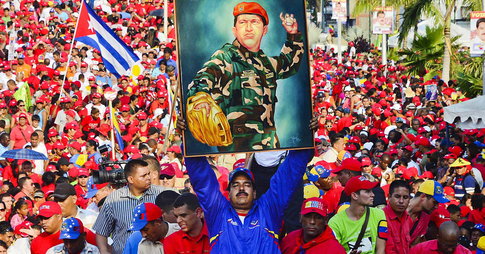

Categories::Coup; armed forces; authoritarian government; economic crisis; migration.
Actors: : Venezuelan state; various Venezuelan political parties (including the Partido Socialista Unido de Venezuela, currently the ruling party); Venezuelan civil organisations.
1989 : El Caracazo”. During the second government of of Carlos Andrés Pérez, during a socio-economic crisis, a series of mass protests and riots broke out in the country. The government repressed the demonstrations, and many people were killed. These protests continued in the following years.
1992 : On 4 February, a group of army officers leads a coup attempt against the government. The coup fails, and Lieutenant Colonel Hugo Chávez claimed responsibility. There was a second coup attempt on 27 November of the same year.
1993 : In May, Pérez was impeached on charges of corruption. The Congress removed him from the presidency on 31 August.
1994 : In February, Rafael Caldera became president.
1999 :After winning the elections, Hugo Chávez Frías became president of Venezuela, bringing the movement known as the Revolución Bolivariana to the fore. In the same year, a Constituent Assembly was organised, and on 21 December, a new Constitution is proclaimed. The country’s name was changed to República Bolivariana de Venezuela.
2001 : Protests against the government began, led by various groups. These continued throughout the following years.
2002 : Coup d’état. In April, amid mass protests in the country, Chávez was ousted from power for a few days by the military. He was reinstated shortly afterwards. A general strike broke out in December and lasted until February 2003. The episode is also known as “paro petrolero”, as it had the state oil company as one of its main actors.
2004 : A referendum was called to decide whether Chavéz’s should continue as president, and it was resolved in his favour.
2007 : Chávez was re-elected president. The political parties that support the government were merged into the Partido Socialista Unido de Venezuela (PSUV).
2012 :Chávez won the presidential election but passed away on 5 March 2013.
2013 :A presidential election was held after Chávez’s death. Nicolás Maduro was elected president. The results of the election were contested by parts of the opposition and protests broke out.
2014 : Numerous protests against the Maduro government and the living conditions of the population took place throughout the year and were repressed by the government.
2017 :In April, a wave of protests broke out across the country following some government measures concerning the legislative body, the Asamblea Nacional. These were violently repressed by the state, but continued until July of that year.
2019 : In January, as Nicolás Maduro was about to be inaugurated for another term, his appointment was questioned by various groups. The Asamblea Nacional nominated Juan Guaidó as interim president. Subsequently, a series of mass protests broke out across the country and continued throughout the year.
1997 : A series of preexisting paramilitary groups were merged to form the Autodefensas Unidas de Colombia (AUC). In the next years this group will violently spread its presence throughout the country.
1997 : Mandato Ciudadano por la Paz, la Vida y la Libertad. While the violence of the armed conflict was rising, an initiative led by Colombian citizens demanded a non-violent resolution to the conflict.
1999 : “Plan Colombia”. An agreement between the governments of Colombia and the US to combat drug trafficking leads to increased financial support and military presence by the latter.
2003 : During Álvaro Uribe’s presidency, the government increased its military operations against the FARC, as part of the “Plan Patriota”. The increased violence had dire effects on the human rights of the civil population.
2003:Following negotiations with the government, the AUC started a demobilisation process, although violent actions by paramilitary groups continued.
2008 : Case “Falsos Positivos”. A public scandal broke out after the revelation that, from around 2002 onwards, thousands of civilians were killed by the army and presented as enemy combatants.
2012 : Peace talks between the government and the FARC began in the city of La Habana, Cuba.
2016 : Acuerdo Final para la Terminación del Conflicto y la Construcción de una Paz Estable y Duradera. On 26 September, the Colombian government and the FARC signed a peace agreement. Following a referendum, a revised agreement was signed on 24 November.
Organisations Programa Venezolano de Educación-Acción en Derechos Humanos (PROVEA): non-governmental organisation created in 1988 to advance human rights in the country. Comité de Familiares de Víctimas del Caracazo (COFAVIC): a non-governmental organisation for the promotion of human rights, created in 1989 by relatives of victims of state violence during the events of the “Caracazo”. Foro Penal: a non-governmental organisation founded in 2005 that provides legal assistance to victims of human rights violations and those persecuted by the state. Observatorio Venezolano de Conflictividad Social (OVCS): an organisation created in 2010 to monitor manifestations and the general human rights situation in the country. Centro de Paz y Justicia (CEPAJ): an organisation working on the promotion of human rights, including a focus on gender issues. Independent International Fact-Finding Mission on the Bolivarian Republic of Venezuela: a body set up by the UN Human Rights Council in 2019 to investigate human rights violations that have occurred from 2014 onwards.
Issues specific to the country Venezuela continues to experience a social, economic, and political crisis. Since 2015, an increasing number of Venezuelan citizens have left the country, mostly to resettle in other Latin American countries, where new migrant and refugee issues have recently emerged. The UN Refugee Agency (UNHCR) has labelled the situation as one of the largest displacement crises currently unfolding across the globe.